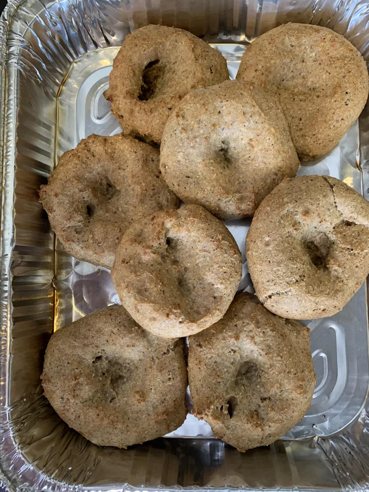

Moist Passover Bagel

Moist bagels that are soft and fluffy.
They make matzoh take on a new light.
You can still have a sandwich on Passover.
Ingredients:
- cooking spray
- 1 ⅓ cups water
- 1 teaspoon salt
- ⅔ cup peanut oil
- 1 teaspoon white sugar
- 2 cups matzo meal
- 6 eggs
Steps:
- Preheat oven to 375 degrees F (190 degrees C). Lightly grease a baking sheet with cooking spray.
- Combine water, oil, salt, and sugar in a saucepan and bring to a boil. Remove from heat. Add 2 cups matzoh meal;
allow to cool for at least 5 minutes. Add eggs, 2 at a time, stirring to incorporate into dough.
- Form 2 tablespoons of dough into a ball using wet hands. Transfer to the prepared baking sheet.
Repeat with the remaining dough. Poke a hole into the middle of each ball.
- Bake in the preheated oven until lightly brown, 50 minutes to 1 hour.